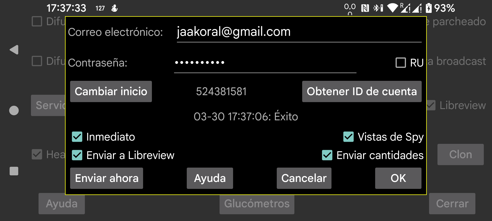

ar be de es fr nl pl pt ru tr uk uz zh en
Juggluco puede enviar datos de glucosa y cantidades a Libreview. No necesita estar conectado continuamente a Internet para poder enviar todos los datos. Igual que la app LibreLink, envía a Libreview los datos de los últimos 89 días. Para sensores FreeStyle Libre 3 se usan los datos de History cada 5 minutos, de modo que también se envían los valores anteriores.
Para usar este servicio debes crear una cuenta en https://libreview.com e introducir aquí el correo electrónico y la contraseña usados allí. No envíes varias veces al mismo tiempo datos del mismo periodo al mismo cuenta de Libreview, por ejemplo desde LibreLink y desde Juggluco, porque puede hacer que los datos se muestren mal o que se sumen cantidades. En Libreview puedes eliminar todos los datos de una fuente en Ajustes de cuenta → Mis dispositivos.
Cada vez que sales de Juggluco, la app envía datos nuevos a Libreview si no lo ha hecho ya en los últimos 20 minutos. También puedes enviarlos manualmente pulsando Enviar ahora.
RU: debes marcar esta opción si usas https://libreview.ru en lugar de https://libreview.com. Esto solo es válido para sensores Libre 2. Los sensores Libre 3 solo pueden usarse con libreview.com, porque no existe una app Libre 3 rusa.
Enviar cantidades: también envía cantidades a Libreview.
Directo: envía valores de glucosa a Libreview inmediatamente cuando llegan de sensores Libre 2 y 3. Solo tiene sentido junto con LibreLinkUp. Para usarlo, debes añadir una conexión de LibreLinkUp a esta cuenta de Libreview desde una de las apps Libre de Abbott. A veces el valor no se ve enseguida porque LibreLinkUp no redibuja la pantalla de inmediato. Usar LibreLinkUp puede ser arriesgado si no miras con atención, porque al tocar el gráfico puede mostrar un valor antiguo en vez del actual.
Spy Views: cuando Directo también está activado, Juggluco comunica a Libreview si un valor fue visto o no, con algunas limitaciones para evitar mostrar demasiados círculos. Si esta opción está desactivada, Juggluco siempre dirá que no fue visto.
Cambiar inicio: reenvía datos desde una fecha y hora determinadas. Debes pulsarlo si quieres usar una cuenta de Libreview nueva.
Encima de los botones inferiores se indica si el último envío a Libreview fue correcto o qué salió mal.
Como los valores enviados a Libreview primero se promedian y después se analizan, aparecen pequeñas diferencias entre los valores mostrados en la pantalla de estadísticas de Juggluco y los de Libreview. Por ejemplo, Libreview puede indicar 100 % del tiempo activo mientras que Juggluco muestra 96,0 %. Algunos picos y valles también se suavizan, por lo que Libreview puede dar un tiempo en rango ligeramente mayor. Como los valores de History son menos extremos que la media de los valores vecinos, esta diferencia será mayor si Libreview se basa en valores escaneados.
Juggluco puede estar conectado a varios sensores al mismo tiempo, mientras que LibreLink solo puede estar conectado a uno. Al enviar datos a Libreview, Juggluco intenta imitar ese comportamiento enviando primero los datos de un sensor y solo cuando ya no hay más datos de ese sensor empieza a enviar los del siguiente.
Obtener ID de cuenta:
Si quieres obtener el ID de tu cuenta de Libreview pero no deseas enviar valores de glucosa a Libreview, puedes introducir tu correo y contraseña y pulsar Obtener ID de cuenta. Si vuelves a esta pantalla al cabo de un tiempo, se mostrará ese ID de cuenta en lugar del 0. Obtener el ID de cuenta permite tomar el control de un sensor FreeStyle Libre 3 iniciado con la app Libre 3. Eso solo es posible si esa app Libre 3 ya había iniciado sesión en Libreview con ese correo electrónico. Si más tarde intentas asociar un ID de cuenta a la app Libre 3, ya no podrás escanear el sensor FreeStyle Libre 3.
El número de ID de cuenta de Libreview también puede derivarse del UUID que aparece en la barra de direcciones de los informes de Libreview e introducirse manualmente en Juggluco.
Los datos de sensores Sibionics y Dexcom no se envían a Libreview.
Si quieres guardar datos en formato Libreview, también puedes hacerlo desde menú central izquierdo → Exportar o mediante el servidor web de Juggluco. Los valores de glucosa de sensores Dexcom y Sibionics también se incluyen allí.